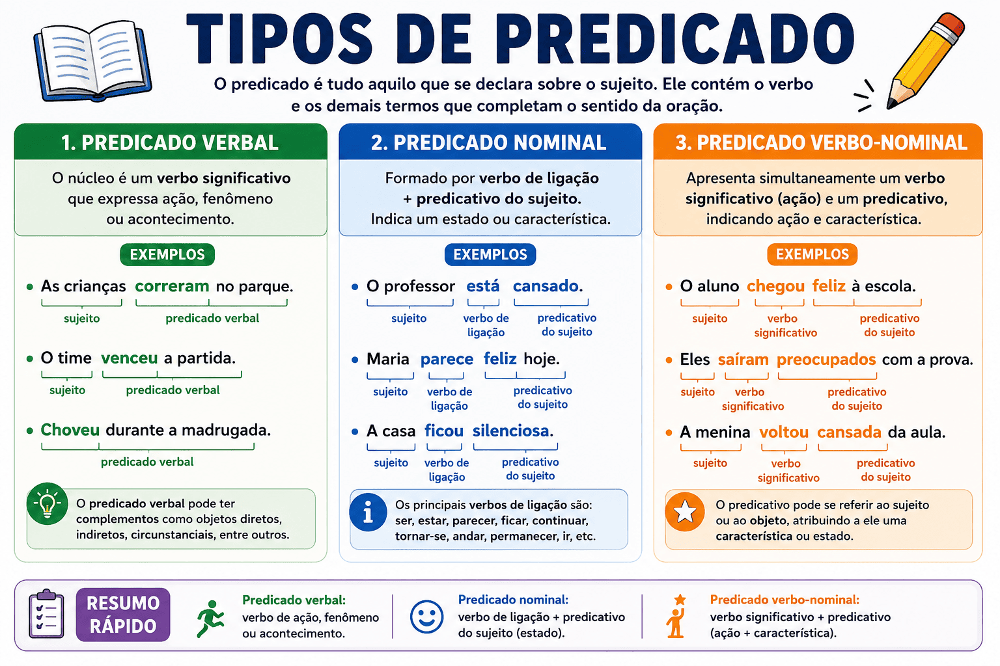

Tipos de predicado: verbal, nominal e verbo-nominal
Os tipos de predicado são classificados, na gramática tradicional, conforme a organização de seus núcleos e a presença de predicativos. As três categorias são verbal, nominal e verbo-nominal.
Compare “Os estudantes chegaram”, “Os estudantes estavam tranquilos” e “Os estudantes chegaram tranquilos”. Os enunciados apresentam, respectivamente, um acontecimento, uma atribuição de estado e a articulação entre acontecimento e estado.
Neste guia, você aprenderá a delimitar o predicado, identificar seus núcleos e diferenciar predicativos, objetos e adjuntos. Ao final, encontrará um quiz com gabarito comentado.

O que é predicado?
Na análise escolar, o predicado é a parte da oração organizada em torno do verbo ou da locução verbal e relacionada ao sujeito, quando ele existe.
Pode incluir complementos verbais, predicativos, circunstâncias e outros termos. A definição “aquilo que se declara sobre o sujeito” é útil inicialmente, mas não explica sozinha as orações sem sujeito.
Os estudantes revisaram o conteúdo ontem.
- Sujeito: os estudantes.
- Predicado: revisaram o conteúdo ontem.
- Verbo: revisaram.
- Objeto direto: o conteúdo.
- Adjunto adverbial de tempo: ontem.
Predicado não é apenas o verbo
No exemplo, o predicado completo é revisaram o conteúdo ontem. “Revisaram” é seu núcleo verbal, mas os demais termos também integram a organização do predicado.
O predicado pode aparecer antes do sujeito
Chegaram ontem os novos materiais.
“Os novos materiais” é sujeito simples posposto. “Chegaram ontem” é o predicado. A ordem das palavras não altera, por si só, essas funções.
Com deslocamentos, os termos do predicado podem aparecer distribuídos: “Ontem, os estudantes chegaram cedo”. Nesse caso, “ontem” continua sendo uma circunstância temporal ligada ao predicado.
Quais são os tipos de predicado?
| Tipo | Estrutura central | Exemplo |
|---|---|---|
| Verbal | Verbo significativo ou locução verbal, sem predicativo na construção. | Os estudantes chegaram cedo. |
| Nominal | Verbo de ligação e predicativo do sujeito. | Os estudantes estavam tranquilos. |
| Verbo-nominal | Verbo significativo e predicativo do sujeito ou do objeto. | Os estudantes chegaram tranquilos. |
A classificação não depende de escolher, por impressão pessoal, “a palavra mais importante”. É necessário reconhecer as relações sintáticas e os núcleos da construção.
1. Predicado verbal
O predicado verbal tem como núcleo um verbo significativo, também chamado de nocional em classificações escolares. Esse verbo pode aparecer sozinho ou integrar uma locução.
Embora muitos exemplos expressem ações, não se deve reduzir a categoria a situações praticadas intencionalmente por alguém. Verbos também podem apresentar processos, experiências e fenômenos.
- A professora explicou a regra.
- Os estudantes dormiram cedo.
- A criança sentiu medo.
- Choveu durante a madrugada.
Predicado verbal com verbo intransitivo
Os convidados chegaram cedo.
- Predicado: chegaram cedo.
- Núcleo verbal: chegaram.
- Cedo: adjunto adverbial de tempo.
- Classificação: predicado verbal.
A presença de uma circunstância não transforma o predicado em verbo-nominal. “Cedo” não atribui uma característica aos convidados: situa a chegada no tempo.
Predicado verbal com complementos
A professora entregou os textos aos estudantes.
- Núcleo verbal: entregou.
- Objeto direto: os textos.
- Objeto indireto: aos estudantes.
- Classificação: predicado verbal.
“Textos” e “estudantes” são substantivos, mas sua presença não cria núcleos nominais do tipo exigido para um predicado verbo-nominal. Eles integram os objetos do verbo.
Predicado verbal com locução
Os alunos estavam revisando o conteúdo.
“Estavam revisando” é uma locução progressiva. “Estavam” funciona como auxiliar, e “revisando” fornece o conteúdo lexical principal. O predicado é verbal.
Ter duas ou mais formas verbais não significa ter predicado verbo-nominal.
2. Predicado nominal
O predicado nominal apresenta um verbo de ligação e um predicativo do sujeito. Na análise tradicional, seu núcleo é o predicativo.
A estudante estava tranquila.
- Sujeito: a estudante.
- Verbo de ligação: estava.
- Predicativo do sujeito: tranquila.
- Predicado nominal: estava tranquila.
- Núcleo: tranquila.
O predicativo não precisa ser um adjetivo
- Ana é professora. — Substantivo.
- Ana é uma excelente professora. — Grupo nominal.
- Ana está sem paciência. — Expressão preposicionada.
- Meu desejo é que todos participem. — Oração com função de predicativo.
O nome “predicado nominal” não significa, portanto, “predicado que contém apenas um adjetivo”. A função predicativa pode ser realizada por estruturas diferentes.
Verbos de ligação e seus sentidos
- A equipe estava confiante. — Apresentação de um estado.
- A equipe ficou confiante. — Mudança de estado.
- A equipe permaneceu confiante. — Manutenção.
- A equipe parecia confiante. — Aparência ou impressão.
- A equipe tornou-se referência. — Mudança de condição.
O predicativo é o núcleo na classificação tradicional, mas o verbo também contribui para o sentido. Trocar “ficou” por “permaneceu” altera a maneira de apresentar a confiança.
O mesmo verbo nem sempre é de ligação
Ligação
O professor anda preocupado.
“Preocupado” é predicativo; o predicado é nominal.
Verbo significativo
O professor anda dois quilômetros por dia.
O verbo expressa deslocamento; o predicado é verbal.
Em construções locativas como “O professor ficou na escola”, a análise escolar tradicional brasileira costuma classificar o predicado como verbal. Outras abordagens linguísticas podem analisar essas estruturas de maneira diferente.
3. Predicado verbo-nominal
O predicado verbo-nominal apresenta um núcleo verbal e um núcleo nominal. Há um verbo significativo e um predicativo relacionado ao sujeito ou ao objeto.
Com predicativo do sujeito
As estudantes chegaram animadas.
- Sujeito: as estudantes.
- Núcleo verbal: chegaram.
- Predicativo do sujeito: animadas.
- Núcleo nominal: animadas.
- Predicado: chegaram animadas.
A frase apresenta a chegada e atribui às estudantes uma condição associada a essa situação.
Uma paráfrase explicativa é “As estudantes chegaram e estavam animadas”. Ela ajuda a perceber as duas informações, mas não significa que exista obrigatoriamente uma segunda oração oculta na frase original.
Com predicativo do objeto
A comissão considerou a proposta inadequada.
- Sujeito: a comissão.
- Núcleo verbal: considerou.
- Objeto direto: a proposta.
- Predicativo do objeto: inadequada.
- Núcleo nominal: inadequada.
- Classificação: predicado verbo-nominal.
“Inadequada” caracteriza a proposta, não a comissão. O objeto direto e o predicativo são termos diferentes.
O predicado verbo-nominal não se limita à combinação “ação e estado do sujeito”. O predicativo também pode se relacionar ao objeto, como em “considerou a proposta inadequada”.
Comparação dos três tipos em exemplos próximos
| Oração | Tipo | Análise central |
|---|---|---|
| Os estudantes saíram cedo. | Verbal | “Saíram” é núcleo verbal; “cedo” indica tempo. |
| Os estudantes estavam satisfeitos. | Nominal | “Estavam” é de ligação; “satisfeitos” é predicativo. |
| Os estudantes saíram satisfeitos. | Verbo-nominal | “Saíram” mantém sentido próprio; “satisfeitos” caracteriza o sujeito. |
A classificação muda porque as relações sintáticas mudam. Em “saíram satisfeitos”, sair não se transforma em verbo de ligação apenas por ser seguido de um adjetivo.
Predicativo ou adjunto adnominal?
A presença de um adjetivo não comprova predicado nominal ou verbo-nominal. Ele pode acompanhar um substantivo como adjunto adnominal.
Adjetivo dentro do sujeito
As estudantes atentas resolveram a atividade.
Na leitura em que “atentas” integra o grupo do sujeito, o predicado “resolveram a atividade” é verbal.
Adjetivo no predicado
As estudantes resolveram a atividade preocupadas.
“Preocupadas” é predicativo do sujeito; o predicado é verbo-nominal.
Adjetivo dentro do objeto
A professora comprou dois livros novos.
Na leitura usual, “novos” integra o objeto direto “dois livros novos” e funciona como adjunto adnominal. O predicado é verbal.
Compare com “A professora considerou os livros interessantes”: “interessantes” expressa uma avaliação atribuída ao objeto e funciona como predicativo.
Predicativo ou adjunto adverbial?
O predicativo atribui uma característica ao sujeito ou ao objeto. O adjunto adverbial acrescenta uma circunstância ao processo ou ao enunciado.
Modo de realização
As alunas escreveram cuidadosamente.
O advérbio caracteriza a maneira de escrever. Predicado verbal.
Estado das participantes
As alunas escreveram preocupadas.
O adjetivo caracteriza as alunas. Predicado verbo-nominal.
A concordância ajuda: “preocupadas” aparece no feminino plural, em relação a “as alunas”. O advérbio “cuidadosamente” permanece invariável.
Esse contraste é uma ferramenta, não uma regra que dispense o contexto. Algumas expressões permitem leituras próximas ou análises diferentes conforme o emprego.
Locução verbal não significa predicado verbo-nominal
A quantidade de palavras verbais não determina a classificação do predicado.
- Os alunos estavam estudando. — Predicado verbal.
- Os alunos tinham concluído a atividade. — Predicado verbal.
- Os documentos podem ter sido enviados. — Predicado verbal.
No último exemplo, vários auxiliares participam de uma unidade verbal. Não há, por esse motivo, um predicativo que torne o predicado verbo-nominal.
Voz passiva e predicado nominal: como diferenciar?
Atribuição de característica
A professora foi cuidadosa.
“Foi” é de ligação e “cuidadosa” é predicativo. Predicado nominal.
Evento na voz passiva
A professora foi elogiada pela equipe.
“Foi elogiada” é locução passiva. Predicado verbal.
Não basta identificar uma forma do verbo ser. É necessário verificar se ela liga o sujeito a um predicativo ou participa da voz passiva de outro verbo.
Estado e evento em construções com particípio
- A porta está aberta. — Na leitura de estado, predicado nominal.
- A porta foi aberta pelo porteiro às oito. — Evento passivo, com predicado verbal.
Em construções mais complexas, a análise pode depender do contexto. O formato da palavra, isoladamente, não determina sua função.
Existe predicado em oração sem sujeito?
Sim. Verbos empregados impessoalmente organizam orações que não apresentam sujeito, mas possuem predicado.
- Choveu durante a madrugada.
- Havia muitas dúvidas.
- Faz dois anos que ele se mudou.
Em “Havia muitas dúvidas”, a oração inteira constitui predicado verbal. Haver, com sentido de existir, é impessoal; “muitas dúvidas” é objeto direto na análise tradicional.
No último exemplo, a primeira oração, “Faz dois anos”, não apresenta sujeito. A estrutura seguinte precisa ser analisada separadamente.
O vocativo integra o sujeito ou o predicado?
O vocativo chama o interlocutor e não se integra a nenhum desses dois termos.
Professor, os estudantes chegaram cedo.
- Vocativo: professor.
- Sujeito: os estudantes.
- Predicado verbal: chegaram cedo.
Por isso, a orientação “predicado é tudo o que sobra depois de retirar o sujeito” precisa ser usada com cuidado. O vocativo deve ser reconhecido separadamente.
Como identificar o tipo de predicado passo a passo?
- Localize o verbo ou a locução verbal.
- Delimite a oração: não misture termos de orações diferentes.
- Identifique o sujeito, quando houver: observe também sujeitos pospostos ou ocultos.
- Procure predicativos: há uma característica atribuída ao sujeito ou ao objeto?
- Analise o papel do verbo: ele é de ligação, significativo ou auxiliar?
- Diferencie predicativos, objetos e adjuntos.
- Reconheça os núcleos: verbal, nominal ou a combinação dos dois.
Análise completa de um predicado verbo-nominal
Ontem, os avaliadores consideraram a proposta inadequada.
- Sujeito: os avaliadores.
- Núcleo do sujeito: avaliadores.
- Adjunto adverbial de tempo: ontem.
- Verbo significativo: consideraram.
- Objeto direto: a proposta.
- Predicativo do objeto: inadequada.
- Núcleos do predicado: consideraram e inadequada.
- Classificação: predicado verbo-nominal.
Como os tipos de predicado contribuem para o sentido?
A organização sintática permite apresentar acontecimentos, caracterizações e avaliações. Compare:
- A equipe concluiu o projeto. — Apresenta um acontecimento.
- A equipe estava satisfeita. — Atribui um estado à equipe.
- A equipe concluiu o projeto satisfeita. — Articula a conclusão e o estado da equipe.
- A comissão considerou o projeto satisfatório. — Apresenta uma avaliação atribuída ao objeto.
Essas diferenças ajudam a reconhecer quem recebe uma caracterização e como ela se relaciona ao acontecimento. Também permitem evitar ambiguidades na produção escrita.
Erros frequentes na classificação dos predicados
- Classificar todo predicado com verbo como verbal: predicados nominais também apresentam verbo.
- Classificar todo predicado com adjetivo como nominal: o adjetivo pode exercer outras funções.
- Confundir dois verbos com dois núcleos de predicado verbo-nominal: auxiliares integram locuções.
- Tratar ser e estar sempre como ligação: ambos podem funcionar como auxiliares.
- Ignorar o predicativo do objeto: a característica pode ser atribuída ao objeto, não ao sujeito.
- Confundir objetos com núcleos nominais: substantivos presentes no predicado não o tornam verbo-nominal.
- Definir predicado verbal apenas como ação intencional: a categoria também abrange outros tipos de situação.
- Esquecer orações sem sujeito: elas também possuem predicado.
Quiz sobre tipos de predicado
Marque uma alternativa por questão. Considere a análise sintática tradicional.
1. Em “Os estudantes chegaram cedo”, o predicado é:
2. Em “A apresentação foi excelente”, o núcleo do predicado é:
3. Em “As alunas chegaram animadas”, a análise correta é:
4. Em “A comissão considerou a proposta inadequada”, “inadequada” é:
5. Em “Os alunos estavam estudando”, o predicado é:
6. Qual alternativa apresenta predicado verbal na voz passiva?
7. Em “As estudantes atentas resolveram a atividade”, considerando “atentas” como parte do sujeito, o predicado é:
8. Compare “As alunas escreveram cuidadosamente” e “As alunas escreveram preocupadas”. Os predicados são, respectivamente:
9. Em “Havia muitas dúvidas”, a análise tradicional reconhece:
10. Em “A professora entregou os textos aos estudantes”, os substantivos presentes nos objetos:
Resumo dos tipos de predicado
- O predicado pode conter verbo, complementos, circunstâncias e predicativos.
- Predicado verbal tem núcleo verbal, sem predicativo na construção.
- Predicado nominal apresenta verbo de ligação e predicativo do sujeito.
- Na análise tradicional, o núcleo do predicado nominal é o predicativo.
- Predicado verbo-nominal apresenta núcleo verbal e predicativo do sujeito ou do objeto.
- Um adjetivo pode ser adjunto adnominal, sem alterar o tipo do predicado.
- Uma circunstância adverbial não equivale a predicativo.
- Locuções com vários verbos não são automaticamente verbo-nominais.
- Construções passivas podem apresentar predicado verbal.
- Orações sem sujeito também possuem predicado.
- A classificação depende das relações sintáticas, não da contagem de substantivos ou adjetivos.
Conclusão
A identificação dos tipos de predicado depende da análise do verbo e da presença de uma atribuição predicativa. É necessário distinguir o que completa o sentido verbal, o que acrescenta circunstâncias e o que caracteriza o sujeito ou o objeto.
Comparar estruturas próximas, como “chegaram cedo”, “estavam tranquilos” e “chegaram tranquilos”, ajuda a compreender essas diferenças. A classificação passa, assim, a explicar a organização do enunciado e sua construção de sentido.
Perguntas frequentes sobre tipos de predicado
Quais são os tipos de predicado?
Na classificação tradicional, os tipos são predicado verbal, predicado nominal e predicado verbo-nominal.
Qual é o núcleo do predicado nominal?
Na análise tradicional, o núcleo é o predicativo do sujeito, como “tranquila” em “A estudante estava tranquila”.
Todo predicado com adjetivo é nominal?
Não. O adjetivo pode ser adjunto adnominal ou predicativo em um predicado verbo-nominal. É necessário analisar sua função.
Uma locução com dois verbos forma predicado verbo-nominal?
Não. A quantidade de formas verbais não determina essa classificação. Em “Os alunos estavam estudando”, há predicado verbal.
Existe predicado em oração sem sujeito?
Sim. Em “Choveu durante a noite” e “Havia muitas dúvidas”, há predicado, embora os verbos sejam empregados impessoalmente.
Continue estudando Gramática
- Verbos de ligação: predicativos e usos no contexto
- Tipos de sujeito: classificação e identificação
- Transitividade verbal: verbos e complementos
- Locuções verbais: auxiliares e verbos principais
- Adjetivos: classificação e exemplos
- Análise sintática: funções dos termos na oração
- Mais conteúdos de Gramática — página 2
Referências e leituras de aprofundamento
- BECHARA, Evanildo. Moderna gramática portuguesa. Rio de Janeiro: Nova Fronteira.
- CUNHA, Celso; CINTRA, Lindley. Nova gramática do português contemporâneo. Rio de Janeiro: Lexikon.
- CEGALLA, Domingos Paschoal. Novíssima gramática da língua portuguesa. São Paulo: Companhia Editora Nacional.
- ROCHA LIMA, Carlos Henrique da. Gramática normativa da língua portuguesa. Rio de Janeiro: José Olympio.
Explore Outros Conteúdos
Continue seus estudos acessando outras seções do site Mestre Kira: